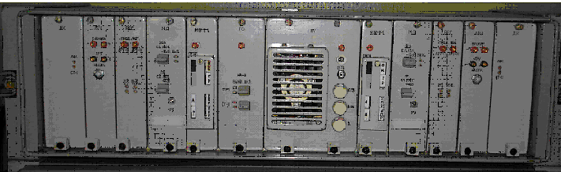
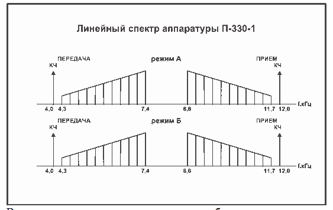
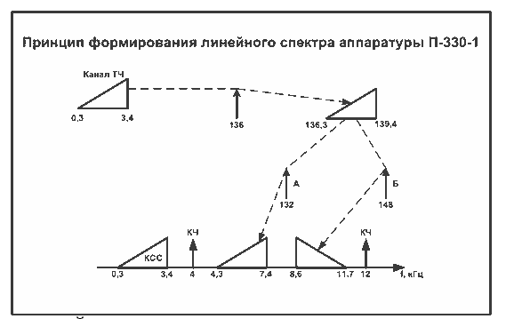
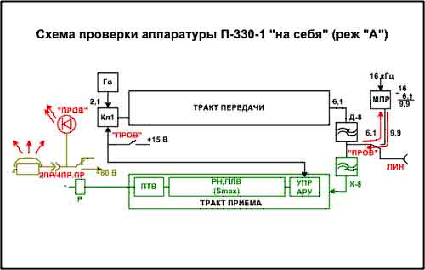
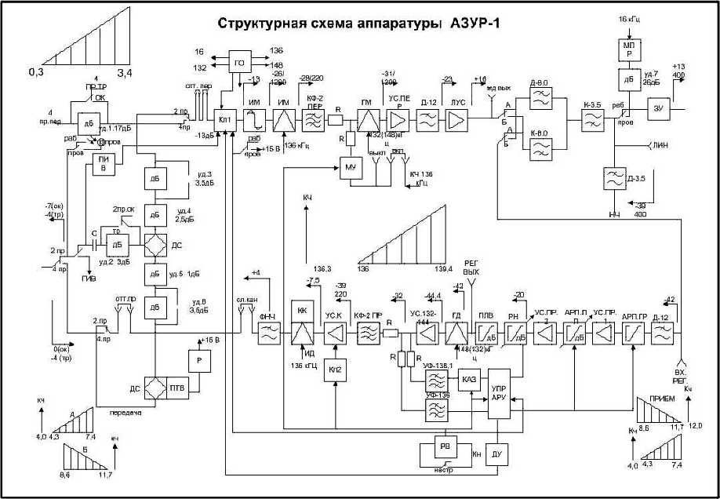
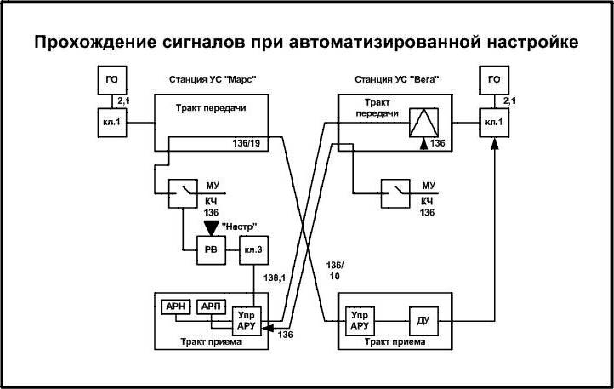
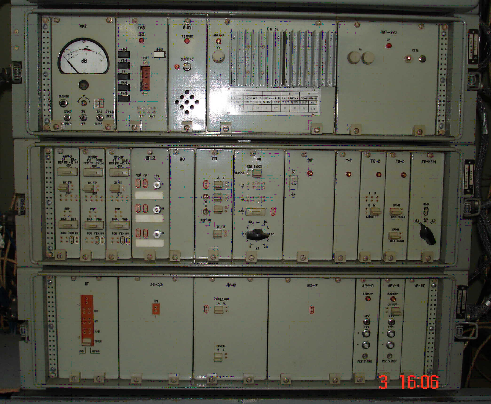
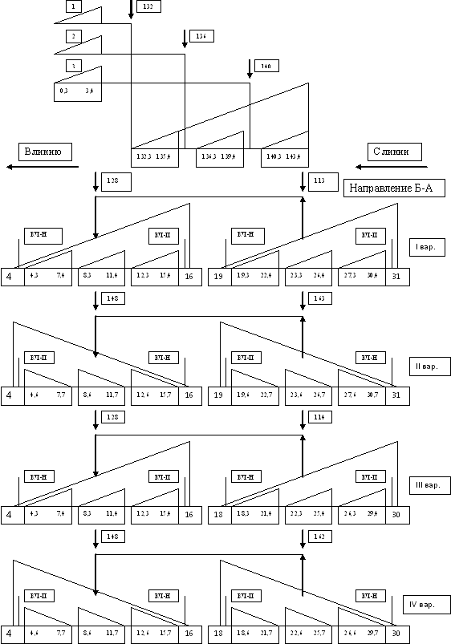

Тема №3. Устройство и эксплуатация систем передачи с частотным разделением каналов
Занятие №12. Аппаратура каналообразования П-330-1 и П-330-3.
Учебные вопросы:
Литература:
- Многоканальные системы передачи, Ч.1. Теоретические основы построения МСП. – Мн.: БГУИР, 2010.
- Многоканальные системы передачи (часть 2). Учебно-методическое пособие «Аппаратура МКСП с ЧРК». – Мн.: БГУИР, 2010.
- Учебно-наглядное пособие «Альбом схем аппаратуры МКСП». – Мн.: БГУИР, 2010.
- Кирилов В.И. Учебное пособие «Многоканальные системы передачи»: – М.: Новое знание, 2003.
1. Назначение, состав, технические характеристики и режимы работы аппаратуры П-330-1.
Аппаратура П-330-1 входит в состав нового комплекса и является четвёртым поколением средств многоканальной связи.
Комплекс П-330 или "Азур" предназначен для образования кана-лов по РРЛ, ТРЛ, кабельным и воздушным линиям связи.
В состав комплекса входят системы передачи с ЧРК на 1,3,6,12,24,60 каналов.
Особенности комплекса "Азур"
- Повышенная надёжность: Наработка на отказ до 10 тыс. часов.
- Облегчённая эксплуатация: Восстановление аппаратуры произ-водится заменой блоков, и время восстановления не превышает 2 ми-нут. Широко используется система функционального контроля, и автоматизированы процессы эксплуатации.
- Снижены масса и габариты (в 2-3 раза)
- В системе применяется современная элементная база. В том числе используются электромеханические фильтры, которые имеют ма-лые размеры и высокие характеристики в диапазоне частот 100-200 КГц. Для более полной реализации таких фильтров применяется 2-х ступенчатое преобразование частоты.
1. Назначение аппаратуры.
Аппаратура П-330-1 предназначена для оборудования одного ка-нала ТЧ на 2-х проводных линиях связи типа П-274М или П-268, воз-можно включение аппаратуры в ПЛВС с использованием медных и стальных проводов.
2. Типы образуемых каналов и их использование.
В аппаратуре П-330-1 предусмотрены следующие типы каналов:
- канал ТЧ - 1 канал
- канал служебной связи (канал НЧ)- 1 канал
Канал ТЧ может быть использован :
- для включения СА и получения закрытого телефонного канала;
- для включения аппаратуры ТТ и оборудования от 1 до 12 теле-графных каналов;
- для включения фототелеграфной аппаратуры;
- для включения аппаратуры АСУВ.
Для служебной связи используется канал служебной связи (канал НЧ который образуется сразу же после включения аппаратуры) с поло-сой частот 0,3 ?3,4 КГц.
3. Комплектация, состав основного оборудования.
В составе П-330-1 конструктивно размещаются:
- 2 станции в одном моноблоке
- комплект ЗИП
- комплект технической документации.
4. Используемые линии связи, структура линий и дальность связи.
Lуу - длина усилительного участка
Lmax - максимальная дальность связи
Усилительный участок (УУ) - часть линейного тракта между двумя соседними пунктами линии.
Однородный (переприёмный) участок линейного тракта - часть линейного тракта, ограниченная двумя оконечными пунктами или пунктами выделения.
Максимальная длина усилительного участка зависит от типа ис-пользуемой линии и составляет:
- для кабеля П-268 - 25 км;
- для кабеля П-274 - 15 км;
- для стальных ВЛС - 37.5 км;
- для медных ВЛС - 300 км.
Полевая кабельная линия максимальной протяженности может быть составлена из 4-х переприемных участков.
Максимальная длина линии Lmax= 4Lуу:
- для кабеля П-274М = 60 км
- для кабеля П-268 = 100 км
- для медной ВЛС до 1200 км.
5. Электрические характеристики аппаратуры.
Аппаратура П-330-1(рис.1.1) является 2-х проводной 2-х по-лосной системой передачи с ЧРК, обеспечивающей получение одного канала ТЧ в диапазоне частот 4.3-11.7 кГц.
Рис.1.1. Аппаратура П-330-1
Аппаратура работает в двух режимах А и Б
Режим А:
- передача НБПЧ 4,3 - 7,4 кГц
- прием ВБПЧ 8,6 - 11,7 кГц
Режим Б:
- передача ВБПЧ 8,6 - 11,7 кГц.
- прием НБПЧ 4,3 - 7,4 кГц
6. Режимы работы каналов и их основные характеристики
Rвх=Rвых=600 Oм
ЭППЧ канала ТЧ, КГц 0,3-3,4
Вызов по каналам осуществляется частотой 2100 Гц
7. Электропитание аппаратуры и потребляемая мощность.
Аппаратура рассчитана на электропитание от источников пере-менного тока с напряжением 220В - +10 -15%
Мощность, потребляемая моноблоком с двумя станциями, состав-ляет 38 Вт.
Линейный спектр аппаратуры занимает полосу частот 4-12 кГц. Данный спектр получается путём индивидуального и группового преобразования.
В тракте передачи индивидуальное преобразование осуществляет-ся с помощью индивидуальной несущей 136 кГц. Спектр канала ТЧ 0.3-3.4 кГц с помощью несущей преобразуется в спектр 136.3-139.4 кГц (ВБПЧ).
Групповое преобразование осуществляется с помощью несущей 132 кГц (режим А) и 148 кГц (режим Б). Спектр ВБПЧ (136.3-139.4 кГц) преобразуется в линейный спектр частот 4.3-7.4 кГц (режим А) и 8.6-11.7 кГц (режим Б). Кроме полученного спектра частот в линию передаются сигналы контрольных частот 4 кГц и 12 кГц, сигналы канала служебной связи 0.3-3.4 кГц.
УСТРОЙСТВО.
Аппаратура П-330-1 конструктивно выполнена в виде одного мо-ноблока. В моноблоке размещаются две самостоятельные станции (станция 1 и станция 2), которые можно включать в линии и эксплуати-ровать независимо друг от друга.
Как и большинство военно-полевых систем передачи, моноблок состоит из ряда функциональных блоков. Однотипные блоки обоих станций взаимозаменяемы, что позволяет производить замену повреж-денных блоков.

ДК - в блоке размещены линейные (ДК-3.5) и направляющие (ДК-8) фильтры.
Гнезда ЛИН СТ-1 (ЛИН. СТ-II) позволяют подключать внешние измерительные приборы к линейному выходу (входу) аппаратуры.
АРУ - блок задает алгоритмы работы блока РЕГ в автоматическом и автоматизированном режимах работы стации.
В блоке АРУ размещены светодиоды БЛОКИР -, + и АРУ +,-. Светодиоды БЛОКИР +, - светятся при резких и значительных измене-ниях принимаемого уровня КЧ (например, при обрыве линии). Свето-диоды АРУ +,- светятся во время работы схемы АРУ и гаснут, когда уровень сигнала КЧ становится нормальным. Кнопка НАСТР предна-значена для включения устройств автоматизированной настройки.
РЕГ - в блоке обеспечивается по сигналам из блока АРУ компен-сация искажений амплитудно-частотной характеристики линии при из-менении ее длины от 0 до максимальных в различных климатических условиях.
В блоке РЕГ находятся светодиоды ПРЕД РЕГ АРУ-П, ПРЕД РЕГ АРУ-Н и контрольные гнезда с гравировками ВХ и ВЫХ. Свече-ние светодиодов сигнализирует об исчерпании пределов работы схемы АРУ, а гнезда позволяют контролировать сигналы внешним прибором на входе и выходе блока.
МД - блок включает устройства, которые осуществляют преобра-зование тонального спектра 0.3-3.4 КГц в линейный спектр 4.3-7.4 КГц (8.6-11.7 КГц) на передаче и обратное преобразование на приеме.
На лицевой панели блока МД размещаются гнезда ПЕР СЛ-КАН, ПР СЛ-КАН которые позволяют производить измерения в трактах пе-редачи и приема в сторону соединительных линий.
Гнезда ВЫХ позволяют контролировать сигналы на выходе ЛУС тракта передачи, а регулятором РУ обеспечивается установка номи-нального уровня (+4 дБ) на выходе канала ТЧ. Гнезда СЛ-КАН соеди-няются в трактах передачи и приема с помощью двух 4-х контактных колодок.
КОММ - блок содержит коммутационные элементы, которые по-зволяют устанавливать режимы работы станции (А или Б), режим рабо-ты канала ТЧ (любой из четырех). В блоке также размещаются элемен-ты, обеспечивающие согласование 4-х проводного канала и устройства преобразования вызывных сигналов.
В блоке КОММ на лицевой панели размещен ряд кнопок и свето-диод ПРОВ. При проверке работоспособности свечение светодиода свидетельствует о работоспособности станции. Нажатие комбинации кнопок обеспечивает задание режима работы аппаратуры ТЧ.
Два блока - ГО и ПУ - являются общими для первой и второй станций моноблока.
Блок генераторного оборудования ГО предназначен для получения:
- управляющей частоты 372 КГц;
- несущих частот 16; 132; 136 и 148 КГц;
- контрольной частоты 136 КГц;
- сигнальной частоты тонального вызова 2,1 КГц.
В блоке ГО размещен светодиод и гнезда КЧ-П СТ-1 ВЫКЛ-ВКЛ, КЧ-П СТ-II ВЫКЛ/ВКЛ.
Светодиод светится при нарушении работы блока, а соответст-вующие гнезда позволяют с помощью 4-х контактных колодок вклю-чать или выключать сигнал КЧ-П.
Питающее устройство, размещенное в блоке ПУ, предназначено для обеспечения аппаратуры постоянным током стабилизированного напряжения 15В, и нестабилизированного напряжения 27В, а также пе-ременным током с напряжением 80В. На лицевой панели блока ПУ раз-мещены светодиод, индикаторная лампа, переключатель (СЕТЬ) и три предохранителя. Индикаторная лампа сигнализирует о наличии входно-го напряжения, а светодиод светится при возникновении неисправности в схемах блока
На боковых стенках моноблока размещаются:
- на левой боковой стенке:
- разъем для подключения переходного щитка или коммутацион-ного оборудования аппаратной к станции 1 (СТ-1);
- разъем для подключения аппаратуры тонального телеграфиро-вания типа П-327-2 и каналу ТЧ станции 1 (ОТТ-1);
- зажим для подключения заземления;
- разъем для соединения моноблоков П-330-1 с целью синхрони-зации на переприемных пунктах (СИНХР.ГО)
- крышка защитного устройства станции 1 (ЗУ)
- на правой боковой стенке:
- разъемы СТ-II и ОТТ-II, предназначенные для подключения внешних устройств к станции II аналогично рассмотренным СТ-1 и ОТТ-1;
- разъем для подключения источника переменного тока (220В);
- крышка защитного устройства станции II (ЗУ).
Структурная схема аппаратуры П-330-1 содержит следующие функциональные группы устройств:
- тракт передачи;
- тракт приема (с системой АРУ);
- низкочастотное оборудование;
- генераторное оборудование.
Тракт передачи.
Тракт передачи предназначен для преобразования сигналов спектра частот 0,3+3,4 кГц в сигналы линейного спектра, а также для формирования токов контрольных частот.
В состав тракта передачи входят:
- электронный ключ
- ограничитель амплитуд ОГР
- индивидуальный модулятор ИМ
- канальный фильтр КФ II ПЕР
- групповой модулятор ГМ
- усилитель передачи УС ПЕР
- линейный усилитель ЛУС
- фильтры Д-12, Д8,0
Сигналы из низкочастотного оборудования поступают на элек-тронный ключ Кл.1
Электронный ключ Кл1 служит для подключения к тракту пере-дачи тока частоты 2,1 кГц в случаях:
- при передаче вызова по каналу ТЧ;
- при настройке канала ТЧ;
- при проверке аппаратуры "на себя".
Ограничитель амплитуды ОГР предназначен для защиты тракта передачи от перегрузок, которые возникают при неправильном выборе и установке режима работы канала, подключении к каналу ТЧ оконеч-ного устройства с завышенным уровнем передаваемого сигнала, а также неправильной эксплуатации оконечных устройств.
Наиболее чувствительны к перегрузкам устройства с активными усилительными элементами. К таким устройствам относятся модулято-ры и усилители.
Индивидуальный модулятор ИМ преобразует спектр частот 0,3 - 3,4 кГц с помощью несущей частоты 136 кГц в спектр частот 136,3 - 139,4 кГц (ВБПЧ) И 132,4 - 135,7 кГц (НБПЧ).
Преобразователи частоты построены на принципе модуляции то-ков несущей частоты сигнала. Изображается на схемах в виде прямо-угольника с двумя входами и одним выходом.
На выходе модулятора получаются широкий спектр сигналов. Наиболее мощными из них являются две боковые полосы частот, одна из них называется верхней боковой полосой частот (ВБПЧ) и полу-чается она путем сложения несущей частоты и полосы НЧ сигнала. Вторая боковая полоса частот называется нижняя боковая полоса частот (НБПЧ) получается путем вычитания от несущей - полосы НЧ сигнала.
Канальный фильтр передачи (Кф-П ПЕР) выделяет полезную ВБПЧ (136,3 - 139,4 кГц) и подавляет неиспользуемые продукты преоб-разования ИМ.
В аппаратуре П-330-1 используются электромеханические фильт-ры, которые имеют малые размеры и высокие характеристики в диапа-зоне частот от 100 до 200 кГц. Для более полной реализации таких фильтров применяется двух ступенчатое преобразование частоты.
Групповой модулятор ГМ предназначен для преобразования спектра частот 136,3 - 139,4 кГц в линейный спектр 4,3 - 7,4 кГц (в ре-жиме А), либо 8,6 - 11,7 кГц (в режиме Б), с помощью несущих частот 132 и 148 кГц соответственно.
Кроме того, из генераторного оборудования через манипулирую-щее устройство подается ток контрольной частоты 136 кГц.
Как в режиме А, так и в режиме Б на выходе ГМ используются только сигналы НБПЧ. Остальные продукты преобразования подавля-ются фильтром нижних частот Д-12, установленным на выходе усили-теля передачи.
Усилитель передачи Ус. ПЕР обеспечивает необходимую диа-грамму уровней тракта передачи, согласует выходное сопротивление ГМ с входным сопротивлением Д-12, исключает их взаимное влияние. Номинальное усиление составляет 5 ДБ.
Фильтр -Д-12 служит для защиты линейного усилителя от пере-грузки ненужными продуктами преобразования, возникающими на вы-ходе ГМ. Фильтр является фильтром нижних частот с граничной часто-той 12 кГц
Линейный усилитель ЛУС предназначен для обеспечения номи-нального уровня сигнала на линейном выходе аппаратуры.
Номинальное усиление составляет 39 дБ. Номинальный уровень на выходе усилителя составляет 16 дБ.
Выход усилителя через контакты переключателя режимов работы аппаратуры соединен с вилкой направляющих фильтров Д, К - 8,0.
Вилка направляющих фильтров Д, К - 8,0 предназначена для разделения сигналов тракта передачи и приема.
В режиме А сигналы спектра 4,3 - 7,4 кГц проходят в тракте пере-дачи из ЛУС через фильтр Д- 8,0, линейный фильтр К - 3,5, защитное устройство ЗУ и подается в линию с номинальным уровнем 13 дБ.
Фильтр К-8,0 защищает тракт приема от перегрузки сигналами высокого уровня 4,3 - 7,4 кГц из тракта передачи и пропускает токи частот 8,6 - 11,7 кГц, поступающие из линии.
В режиме Б фильтр К - 8,0 включается в тракт передачи, а фильтр Д - 8,0 в тракт приема. Таким образом, направляющие фильтры осуще-ствляют частотную развязку трактов передачи и приема и обеспечивают их совместную работу по 2х проводной линии.
Вилка линейных фильтров Д, К-3,5 предназначена для разделе-ния Сигналов служебного канала НЧ и канала ТЧ.
Фильтр Д - 3,5 представляет собой ФНЧ с граничной частотой 3,5 кГц и служит для выделения сигналов канала НЧ, поступающих с теле-фонного аппарата и подавляет токи частот выше 3,5 кГц, которые явля-ются помехой для канала ТЧ.
Фильтр К - 3,5 является ФВЧ с граничной частотой 3,5 кГц.
Он исключает попадание сигналов служебного канала НЧ в тракт приема, чем защищает элементы тракта приема и передачи от помех создаваемых служебной связью, а также от повреждений их индуктор-ным током при вызове по служебному каналу.
Защитное устройство ЗУ обеспечивает защиту аппаратуры от импульсов высокого напряжения при атмосферных электрических раз-рядах и т.д.
В состав ЗУ входят искровые разрядники с напряжением 200 - 300 вольт. Они включены как между жилами линии, так и между каждой жилой и "землей".
С защитного устройства сигналы через гнезда ЛИН поступают в линию ДС с номинальным уровнем плюс 13 дБ.
Тракт приема.
Тракт приема предназначен для приема сигналов с линии, кор-ректирования амплитудно-частотных искажений, преобразования сиг-налов из линейного спектра (4,3-11,7 кГц) в полосу частот 0,3-3,4кГц и обеспечения номинального уровня на выходе канала.
В состав тракта приема входят:
- фильтры Д,К - 3,5, Д,К - 8,0, Д - 12
- автоматический регулятор плоский грубый АРПН ГР
- автоматический регулятор плоский плавный АРПН ПЛ
- усилитель приема УС ПР I и УС ПР II
- РН
- постоянный линейный выравниватель ПЛВ
- групповой демодулятор ГД
- усилитель УС 132 - 144
- канальный фильтр КФ - II ПР
- Ус К
- ИД
- ФНЧ
- Система АРУ
Сигналы, поступающие из линии, проходят ЗУ, фильтры К-3,5, К-8,0 (режим А) или Д-8,0 (режим Б) и далее на фильтр Д-12. Назначение фильтров Д, К - 3,5 и Д - 8,0 тоже, что и в тракте передачи
Фильтр Д-12 предназначен для защиты тракта приема от высоко-частотных помех, которые могут поступить из линии.
Усилители УСПР-1 и УСПР-П предназначены для обеспечения необходимой диаграммы уровней и согласования входных и выходных сопротивлений автоматических регуляторов.
РН обеспечивает более точную коррекцию АЧХ тракта.
ПЛВ предназначен для частотной компенсации амплитудно-частотных искажений, вносимых линией.
Групповой демодулятор ГД предназначен для преобразования сигналов линейного спектра частот 4,3 - 7,4 кГц или 8,6-11,7 кГц в спектр частот 136,3-139,4 кГц с помощью несущих частот 132 и 146 кГц соответственно.
В результате преобразований полезным продуктом является НБПЧ в режиме А и ВБПЧ в режиме Б
Усилитель УС 132-I44 служит для поддержания внутренней диа-граммы уровней и обеспечивает параллельное подключение канального фильтра приема КФ-П ПР и узкополосных фильтров сигналов КЧ 136 кГц и 138,1 кГц. Такая возможность без нарушения согласования обес-печивается низким выходным сопротивлением усилителя. Номи-нальное усиление равно 12,4 дБ. Номинальный уровень сигнала на выходе усилителя составляет - 32 дБ.
КФ-П ПР предназначен для выделения из сигналов на выходе ГД 136,3-139,4 кГц и подавления токов неиспользуемых продуктов преоб-разования. КФ II ПР аналогичен КФ II ПЕР.
Усилитель канала Ус К предназначен для поддержания номи-нального уровня, сигнала на выходе тракта приема.
В цепь отрицательной обратной связи усилителя включен пере-менный резистор, ось которого выведена на лицевую панель с грави-ровкой РУ с помощью которого устанавливается номинальное значение уровня на выходе тракта приема + 4 дБ.
Индивидуальный демодулятор - ИД обеспечивает преобразова-ние сигнала частот 136,3 -139,4 кГц в спектр 0,3-3,4 кГц с помощью то-ка несущей частоты 136 кГц. Ид как и Им является активным, обеспе-чивающем усиление преобразуемого сигнала, в связи с чем уровень сигнала на его выходе выше входного уровня.
Фильтр нижних частот ФНЧ служит для выделения полезных сигналов ИД и подавления токов неиспользуемых продуктов преобра-зования
Прохождение сигналов в устройствах 2-х проводного оконча-ния каналов.
Назначение: Устройства 2-х проводного окончания канала пред-назначены для обеспечения работы канала ТЧ в 2-х проводном режиме
Они включают в себя:
- дифференциальную систему ДС
- приемник индукторного вызова ПИВ
- приемник тонального вызова ПТВ с неравноплечей диф.системой,
- транзитные удлинители УД1 и УД2,
- удлинители, обеспечивающие необходимую диаграмму уровней УД 3 6.
В 2 ПР режиме работы канала ТЧ оконечные устройства подклю-чаются к зажимам 2ПР/4 ПР. ПР. переходного щитка аппаратуры.
Диффереренциальная система обеспечивает: сопряжение 4-х про-водного окончания канала с 2-х проводными оконечными телефонными устройствами.
ДС представляет собой восьмиполюсник, обладающий свойствами пропускать сигналы с незначительным затуханием в одних направ-ления и препятствовать прохождение сигналов в других направлениях.
Это свойство позволяет использовать для сопряжения 4 ПР окон-чания канала с 2 ПР оконечными устройствами.
Одним из недостатков ДС является необходимость их балансиров-ки, т. е. Обеспечения равенства сопротивлений нагрузки. При наруше-нии баланса ДС теряет указанное выше свойство и возникает возмож-ность прохождения сигналов из тракта приема в тракт передачи, что может привести к самовозбуждению канала. Сопротивление ба-лансного контура в схеме предназначено для уравновешивания сопротивления линии и телефонного аппарата. Полный баланс и наилучшее условие работы ДС достигается при равенстве этих сопротивлений.
Диаграмма уровней обеспечивается затуханием, вносимым самой дифсистемой, выполненной на двух трансформаторах и симметрич-ными резисторными удлинителями с затуханиями:
- в цепи приема 4,5 дБ (1 дБ - постоянный, 3,5 дБ - выключаемый)
- в цепи передачи 6 дБ (2,5 дБ - постоянный, 3,5 дБ - выключае-мый)
- в 2х проводной цепи 3 дБ - выключаемый в транзитном режиме.
Для увеличения затухания в направлении задерживания последо-вательно включены удлинители У3 - У6. При необходимости У3 и У6 могут быть выключены.
ТУ с затуханием 3 ДБ обеспечивает внутреннюю диаграму уров-ней в режимах 2 ПР. ОК. и 2 ПР. ТР. В обоих режимах уровни сигналов на ДС и 4 ПР. окончании канала остаются постоянными и одинаковы-ми.
С предназначен для пропускания разговорных сигналов и защиты ДС от сигнала индукторного вызова.
Для обеспечения приема и посылки вызова от оконечных и ком-мутационных устройств в 2 ПР. режиме относятся:
- приемник индукторного вызова (ПИВ)
- приемник тонального вызова (ПТВ)
- генератор индукторного вызова (ГИВ)
- генератор тонального вызова (ГТВ)
Приемник индукторного вызова ПИВ предназначен для приема сигналов индукторного вызова с частотой 25-50 Гц, напряжением 30-80 В и включения сигнала тонального вызова в тракт передачи.
Приемник тонального вызова ПТВ предназначен для выделения вызывного тока тональной частоты 2,1 кГц из канала ТЧ
Неравноплечая дифсистема на входе ПТВ позволяет подучить малую величину вносимого затухания в тракт приема и обеспечивает необходимую защищенность ПТВ от ложного срабатывания от сигна-лов, поступающих в тракт передачи.
Реле Р отключает 2 ПР выход канала от зажимов 2ПР/4ПР. ПР. и подключает к СЛ источник переменного тока напряжение 80 В и часто-той 50 Гц.
Передача вызова.
От телефонного аппарата индукторный вызов поступает на зажи-мы 2 ПР/4 ПР. ПР, затем через контакты переключателя режимов рабо-ты канала , контакты реле Р , поступает на ПИВ. ПИВ срабатывает и подает сигнал на Кл.1, который обеспечивает передачу тонального вы-зова 2100 Гц от генераторного оборудования на вход тракта передачи канала ТЧ.
Прием вызова.
С выхода ИД тракта приема сигнал тонального вызова проходит через контакты гнезд и колодок СЛ.КАН и ОТТ, контакты переключа-теля режимов работы канала и поступает на вход ПТВ. ПТВ срабатывая, включает реле Р, которое своими контактами подключает к гнездам 2ПР/4ПР ПР источник переменного тока напряжением 80 В и частотой 50 Гц.
Передача разговорных сигналов.
Разговорные сигналы от оконечного тлф аппарата поступают на зажимы 2ПР/4ПР ПР и через контакты переключателя режима работы канала, контакты реле Р, конденсатор С, транзитный удлинитель, диф-ференциальную систему ДС, удлинители У3, У4, контакты переключа-телей режимов работы канала, контакты гнезд и колодок ОТТ, СЛ. КАН., ключ Кл1 поступают на вход тракта передачи.
Прием разговорных сигналов.
С выхода индивидуального демодулятора ИД сигналы последова-тельно проходят ФНЧ, гнезда и колодки СЛ. КАН., ОТТ, контакты пе-реключателя режимов работы канала, дифференциальную систему ПТВ, транзитный удлинитель У2, конденсатор С, контакты реле Р, контакты переключателя режимов работы канала и поступают на зажимы 2ПР/4ПР ПР.
Система АРУ.
В процессе передачи по каналу ТЧ сигналы претерпевают преоб-разования, подвергаются ослаблению (в линии, в пассивных элементах аппаратуры) и усилению (в активных элементах аппаратуры).
Функциональные узлы каналообразующей аппаратуры имеют от-носительно стабильные параметры, т.е. оказывают на сигнал посто-янное во времени воздействие. Параметры линии оказывают на сигнал иное воздействие. Затухание сигнала в линии зависит не только от типа и длины линии (кабель П-268, П-274М, ПВЛС), но и от внешних факто-ров, например от температуры окружающей среды.
Особенностью распространения сигналов по проводным линиям связи является заметное возрастание затухания с увеличением частоты сигнала. Проходя по линии, сигнал получает амплитудно-частотные ис-кажения, т.е. уровень сигнала, передаваемого на более высоких часто-тах, оказывается ниже уровня сигнала на нижних частотах.
Основным методом борьбы с амплитудно-частотными искажения-ми, вносимыми линией, является их компенсация. Для этого в тракте приема включается устройство, амплитудно-частотная характеристика затухания которого имеет наклон, обратный наклону АЧХ линии.
Такие устройства носят название постоянных корректоров АЧИ, а в одноканальной аппаратуре П-330-1 они называются постоянными линейными выравнивателями (ПЛВ).
ПЛВ применяется для частичной компенсации АЧИ, создаваемых линией и различными фильтрами, входящими в состав аппаратуры.
Характеристика затухания ПЛВ постоянна, а затухание линии за-висит в каждом конкретном случае, как от типа применяемого кабеля, так и от длины участка. Естественно, что полная компенсация искаже-ний возможна только в том случае, когда сумма алин + аплв = const на любой частоте в диапазоне f1-f2.
Выполнение этого уровня при эксплуатации аппаратуры малове-роятно в стационарных, а тем более в полевых условиях. Поэтому для более точной коррекции в аппаратуре используется еще одно корректи-рующее устройство - регулятор наклона (РН).
Так как характеристика сигнала после воздействия ПЛВ может со-хранить (или получить) небольшой наклон в сторону верхних или ниж-них частот, то и регулятор наклона позволяет осуществлять регулиров-ку в любую сторону
Получив характеристику сигнала в виде прямой, параллельной оси частот, остается переместить ее вверх или вниз для обеспечения номинального уровня на выходе канала. Эту задачу выполняют регуляторы плоской регулировки (РП ).
Автоматический регулятор плоский АРП представляет собой коммутируемый набор удлинителей. Он обеспечивает установление но-минального остаточного затухания канала в процессе настройки, а так-же его поддержание во время работы станции. АРП состоит из автома-тических регуляторов грубого AРП.ГР и плавного АРП.ПЛ. АРП.ГР может иметь затухание 0 или 26 дБ. АРП.ПЛ может иметь 256 различ-ных значений затухания, крайние из которых отличаются на 26 дБ. Та-ким образом, в целом АРП может изменять затухание, вносимое в тракт приема, от 0 до 52 дБ. Максимальное затухание включается при работе станции по линии минимальной длины с затуханием около 0 Нп. Минимальное затухание включается при максимальной длине линии с затуханием около 62 дБ.
Регулятор наклона РН обеспечивает более точную коррекцию АЧХ тракта. Амплитудно-частотная характеристика РН в полосе 4,3-11,7 кГц может иметь любой наклон в пределах 8,5 дБ. Максимальное изменение затухания на крайних частотах линейного спектра не менее 8,5 дБ.
Постоянный линейный выравниватель ПЛВ предназначен для частичной компенсации амплитудно-частотных искажений, вносимых линией.
В аппаратуре П-330-1 разность затуханий ПЛВ на краях линейно-го спектра 4 и I2 кГц составляет 8,5 дБ.
Принцип работы устройств автоматизированной настройки и автоматического регулирования уровня.
Работа устройств автоматизированной настройки.
После включения аппаратуры в линию на ее вход постоянно по-ступает сигнал КЧ-П от аппаратуры корреспондента. Одновременно та-кой же сигнал подается из тракта передачи в линию.
Процесс автоматизированной настройки станции протекает в сле-дующем порядке:
1. При кратковременном нажатии кнопки"НАСТР"одной из стан-ций включается реле времени РВ этой станции, которое в течение 10с выдает импульсный управляющий сигнал на манипулирующее устрой-ство МУ, ключи Кл2 и Кл3, а также на схему управления АРУ (УПР.АРУ).
2. Через МУ в тракт передачи поступает ток КЧ-П с частотой 136 кГц. После нажатия кнопки "НАСТР" МУ производит прерывание тока КЧ 136 кГц десять раз в секунду под воздействием управляемого сигна-ла РВ.
Ключ Кл 2 при получении управляющего сигнала выключает Ус. К, что предотвращает прохождение сигнала КЧ-Н на выход тракта приема и срабатывания ПИВ.
Ключ Кл. 3, закрытый в исходном состояние, открывается и созда-ет цепь для прохождения тока КЧ-Н 138.1 кГц в схему управления АРУ.
Прерывистый сигнал КЧ-П преобразуется в групповом модуляторе ГМ в сигнал линейного спектра на несущей 132 кГц (в режиме А) или 148 кГц (в режиме Б). В результате преобразования и фильтрации в линию поступает прерывистый сигнал КЧ-П 4 кГц (в режиме А) или 12 кГц (в режиме Б).
3. В тракте приема противоположной станции после группового преобразования превышающийся ток КЧ выделяется узкополосным фильтром УФ-136 и подается через схему управления АРУ ( УПР.АРУ) на деманипулирующее устройство ДУ.
4. ДУ преобразует прерывистый сигнал КЧ в сигнал постоянного тока, который поступает на ключ 1( Кл1.). Кл1. отключает вход тракта передачи от разговорных цепей блока КОММ. и подает на вход тракта передачи ток КЧ-Н с частотой 2,1 кГц.
Таким образом, на линейный вход настраиваемой станции (на ко-торой была нажата кнопка"НАСТР)" с противоположной станции в те-чение 10с поступают одновременно токи обеих контрольных частот КЧ-П и КЧ-Н.
5. Схема УПР.АРУ при получении управляющего сигнала от РВ производит ускоренную настройку автоматического регулятора плоско-го грубого (АПР.ГР), плавного (АРП.ПЛ) и регулятора наклона РН. Эти устройства переводятся в состояние, соответствующее оптимальной на-стройке канала.
Это достигается установлением номинального уровня сигналов КЧ-П и КЧ-Н на выходе тракта приема.
Скорость настройки регуляторов выбрана такой, чтобы время пе-ревода их из одного крайнего состояния в другое не превышало 10с, то есть времени работы РВ. Признаком окончания процесса настройки станции является погасание всех светодиодов на блоках "РЕГ" и "АРУ".
По окончании настройки тракта приема одной из двух станций, аналогично производится настройка в другом направлении.
Возможны следующие нестандартные варианты работы стан-ции при автоматизированной настройке:
1. Противоположная станция выключена или не подключена к ли-нии. При этом после нажатия кнопки "НАСТР" на вход не поступают токи КЧ. В этом случае регулировка идет до тех пор, пока не будут ис-черпаны пределы регулировки АРП и РН и по окончании 10с загорается светодиод ПРЕД.РЕГ.АРУ.П. На блоке АРУ горит светодиод Блокиров-ка "-", сигнализирующий об отсутствии КЧ-П.
2. На противоположной станции также нажата кнопка "НАСТР". В той станции, которая первой начала воспринимать прерывания КЧ, в блоке АРУ срабатывает дискриминатор прерываний и блокировки ДПБ, который блокирует регуляторы, запрещает манипуляцию КЧ и посылает сигнал в Кл1 для подачи в линию КЧ-Н. Процесс автоматизированной настро йки на этой станции остается незавершенным и по окончании работы РВ на блоке АРУ загорится светодиод АРУ "-". На противоположной станции процесс настройки завершится нормальное.
Работа устройств АРУ в автоматическом режиме.
По окончании автоматизированной настройки устройства АРУ пе-реходят в автоматический режим работы, который обеспечивает под-стройку усиления тракта приема в случае медленного изменения зату-хания линии.
В этом режиме автоматическая регулировка производится с ис-пользованием только КЧ-П.
В тракте передачи ток КЧ-П постоянно передается через МУ. Пройдя по линии, сигнал КЧ-П выделяется в тракте приема фильтром УФ-136 и поступает на схему УПР.АРУ. В этой схеме уровень сигнала КЧ-П постоянно сравнивается с эталонным значением. В случае не-большого отклонения уровня от нормы схема УПР.АРУ вырабатывает сигнал управления автоматическими плоскими регуляторами АРП. ПЛ и АРП.ГР. Изменение состояния АДП в процессе автоматической регу-лировки происходит значительно медленнее, чем при автоматизирован-ной настройке. В случае значительного и резкого изменения уровня КЧ-П система АРУ блокируется и загорается один из двух светодиодов БЛОКИР.АРУ"+" или БЛОКИР.АРУ"-".
В аппаратуре систем передачи различных типов существует не-сколько разновидностей систем АРУ по КЧ. Они отличаются по спосо-бу воздействия схем АРУ на регуляторы
Наиболее широко используются следующие типы систем АРУ:
• электромеханическая;
• магнитоэлектрическая;
• электрохимическая;
• электронная (цифровая).
В электромеханической системе АРУ основным устройством является электродвигатель, который с помощью редуктора вращает ось переменного резистора. В свою очередь, резистор обеспечивает регули-ровку усиления тракта приема в сторону коррекции
В магнитоэлектрической системе АРУ регулирующим устрой-ством является рамка с обмоткой, находящаяся в вязкой жидкости и вращающаяся под воздействием магнитного поля. Достоинство этой системы - низкая потребляемая мощность. Недостаток - сложность кон-струкции, зависимость вязкости жидкости от температуры.
В электрохимической АРУ в качестве регулирующего элемента используется резистор, сопротивление которого изменяется в резуль-тате явления электролиза. Такой резистор называется СЭР ( сопротивление электрохимическое регулируемое). Достоинство такой системы -простота и малые размеры. Недостаток - большой разброс па-раметров.
Электронно-цифровая система АРУ применяется в аппаратуре П-330-1. Регулирующий элемент - коммутируемый делитель напряже-ния КДН, который управляется электронными ключами .В качестве ключей используются полевые транзисторы. Управление ключами осу-ществляется реверсивным счетчиком.
В аппаратуре П-330-1 в тракте приема включены два плоских ре-гулятора: плавный и грубый:
• АРП.ГР - грубый, имеет каскад двухпозиционной регулировки с двумя значениями затухания, отличающимися на 26 дБ.
• АРП.ПЛ - плавный, имеет каскад многопозиционной регулиров-ке (256 позиций) крайние из которых отличаются на 26 дБ.
Совместное действие этих двух регуляторов позволяет осущест-вить ступенчатую регулировку усиления на 52 дБ. При этом изменение затухания от 0 до 26 дБ осуществляется плавно о помощью АРП.ПЛ. Затухание этого каскада скачком возвращается в исходное положение, а затухание АРП.ГР изменяется скачком на 26 дБ. Дальнейшее измене-ние затухания осуществляется вновь за счет второго каскада.
Порог чувствительности АРУ аппаратуры составляет: ± 0,7 дБ.
Порог блокировки АРУ составляет: + 26 дБ и - 4,3 дБ.
  2. Назначение, состав, технические характеристики и режимы работы аппаратуры П-330-3.
Аппаратура П-330-3(рис.2.2) предназначена для управления двухпроводных кабельных и воздушных линий связи тремя каналами тональной частоты (ТЧ) в условиях работы подвижных и стационарных узлов связи. Рис.2.2. Аппаратура П-330-3
Аппаратура имеет в своем составе только оконечное оборудование и обеспечивает работу со станциями такого же типа на обоих видах линий связи, а также встречную работу и работу по параллельным цепям постоянных воздушных линий связи (ПВЛС) с аппаратурой В-3-3 в одном из четырех вариантов линейного спектра, приведенных на рис. 1.
Основные технические данные:
1. Аппаратура П-330-3 является двухполосной системой передачи с частотным разделением каналов (ЧРК). Аппаратура может использоваться в двух режимах: А или Б. В режиме А в линию передается нижняя полоса частот линейного спектра, а принимается верхняя полоса частот. В режиме Б в линию передается верхняя полоса частот, а принимается нижняя.
2. Максимальная дальность связи составляет:
по стальной линии связи - 100 км с четырьмя переприемами по ТЧ, при этом максимальная длина усилительного участка не должна превышать 40км;
по линии связи из цветного металла - 1000 км с пятью переприемами по ТЧ, при этом максимальная длина усилительного участка не должна превышать 250 км;
по кабелю типа П-268 - 40 км с четырьмя переприемами по ТЧ, при этом максимальная длина усилительного участка не должна превышать 10 км в условиях "кабель в воде" и 20 км в условиях "зима - сухо".
3. Компенсация изменений параметров линии производится двухчастотной системой автоматической регулировки усиления (АРУ).
4. Каналы ТЧ могут использоваться в следующих режимах работы:
оконечная двухпроводном (2ПР.ОК) при номинальном измерительном уровне передачи 0 дБ и приема минус 7 дБ
транзитном двухпроводном (2ПР.ТР) при номинальных измерительных уровнях передачи и приема минус 4 дБ.
оконечном четырехпроводном (4ПР.ОК) при номинальном измерительных уровнях передачи и приема 4 дБ.
транзитном четырехпроводном (4ПР.ТР) при номинальных измерительных уровнях передачи и приема 4 дБ.
5. Полоса эффективно передаваемых частот каналов ТЧ 0,3-3,4 кГц.
6. Аппаратура обеспечивает возможность дополнительного уплотнения каждого канала ТЧ одноканальным тональным телеграфом (ОТТ) в полосу частот от 2,7 да 3,4 кГц, а также возможность организации канала служебной связи в полосе частот от 0,3 до 3,2 кГц по физической линии.
7. Электропитание аппаратуры осуществляется от источника переменного тока напряжением 220(+22,-33) В частотой (50±1) Гц. Мощность, потребляемая аппаратурой, не превышает 75 В?А.
8. Условия эксплуатации аппаратуры:
Температура окружающего воздуха от минус 10°С до плюс 50°С;
Влажность окружающего воздуха до 98% при температуре плюс 35°С;
Конструктивно аппаратура П-330-3 выполнена в виде трех моноблоков МБ-1, МБ-2, МБ-3, установленных друг на друга и соединенных между собой специальными болтами М10.
Размеры аппаратуры 685x540x315 мм.
Масса аппаратуры не превышает 70 кг.
Схема частотных преобразований в аппаратуре П-330-3 (Все частоты указаны в кило-герцах)
